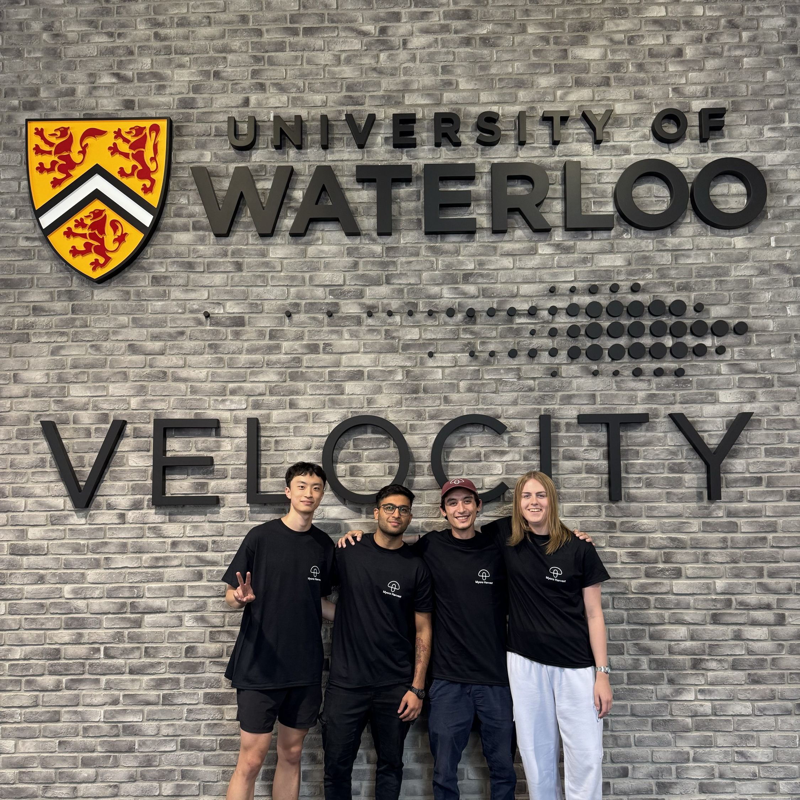
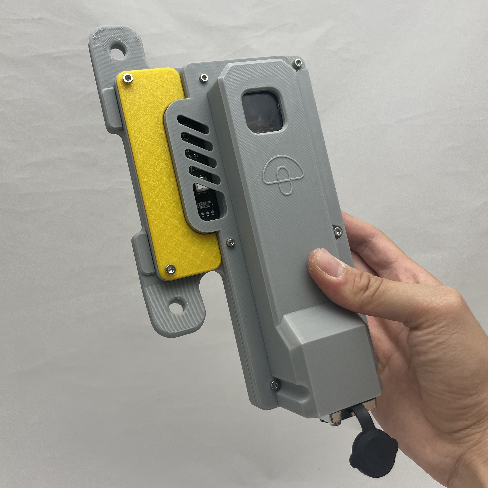
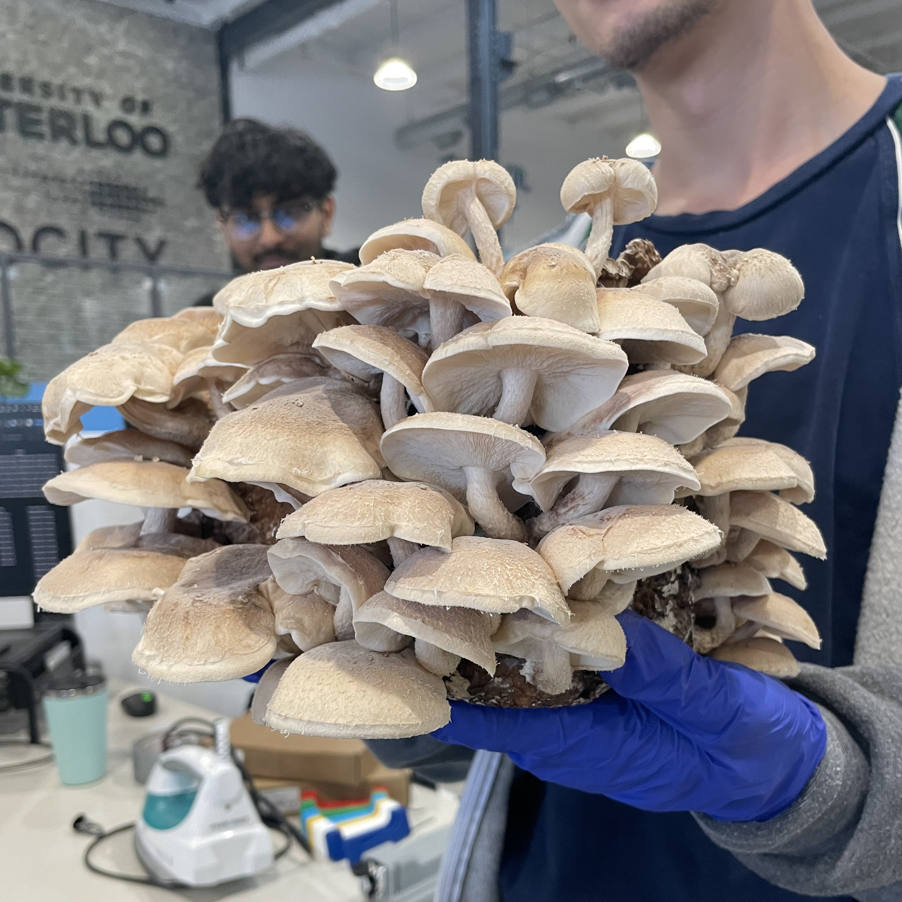
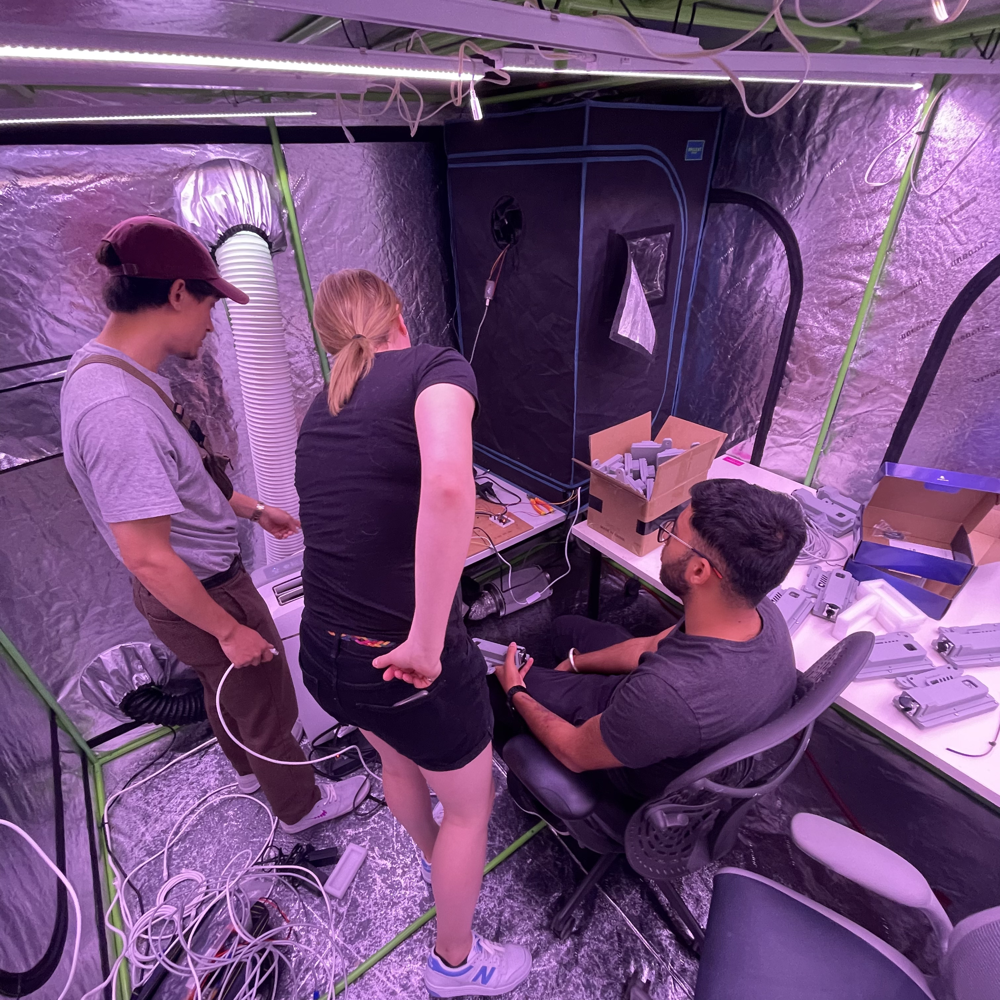

Mycro Harvest
Mechanical Engineering Intern
May 2024 — Aug 2024
•
Toronto, ON
Part of a five person team building autonomous mushroom growth and monitoring systems.




Key Contributions
- ONE
- TWO
- THREE
- FOUR